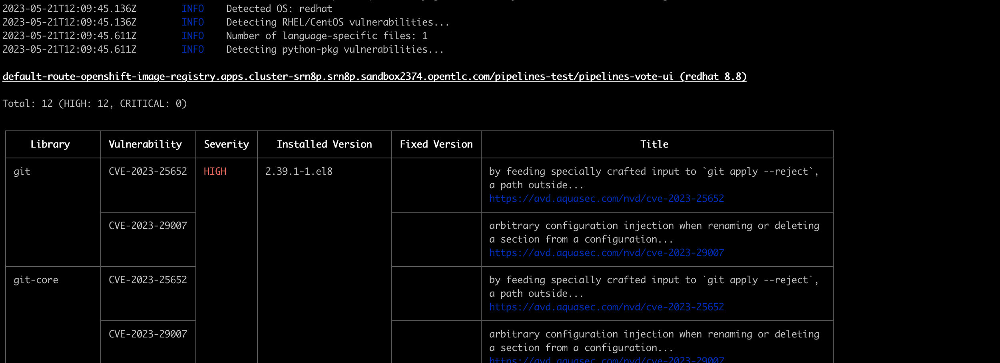
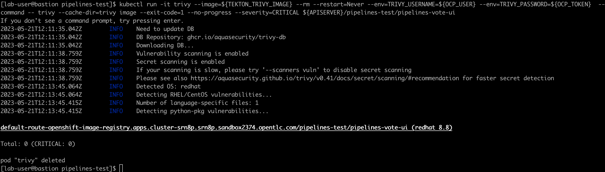
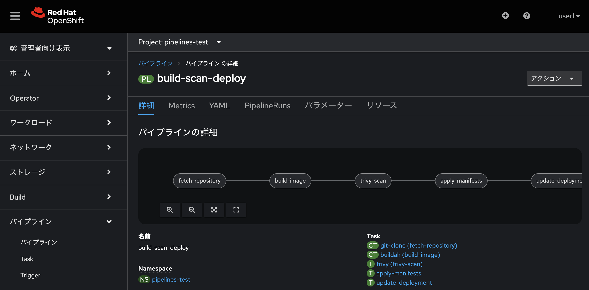
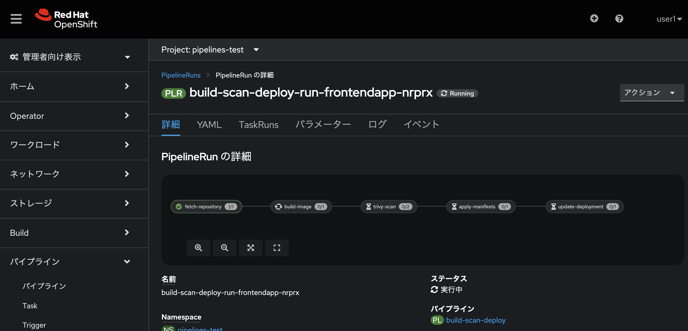
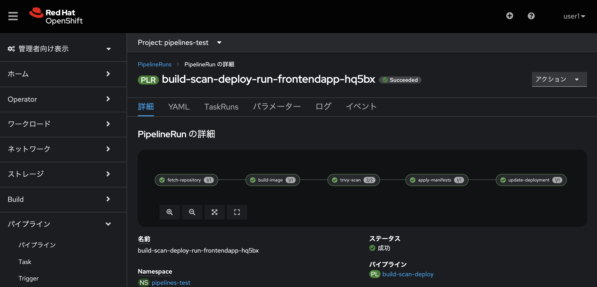

OpenShift Pipelines Lab - Pipeline 2/2
はじめに
このハンズオンでは、前のラボで作成した Pipelines[build-and-deploy] に脆弱性を識別する作業を追加します。
trivy コマンドチェック
まずはクライアント端末や踏み台サーバなどで実装する trivy コマンドを明確にします。 今回の脆弱性チェックを行う本タスクでは、以下の二つのステップを作成します。
-
trivy によるセキュリティ脆弱性評価レポートの作成
-
trivy による CRITICAL な脆弱性の有無
まず、タスクで実装するtrivyによる脆弱性チェックを手動で実行してみましょう。
-
OpenShiftのadmin user でログインし、image registry の default-route を取得します。
# OpenShift APIへログイン oc login -u admin -p <パスワード> <OpenShift API URL:6443> # OpenShift Image RegistryのdefaultRouteを有効化 oc patch configs.imageregistry.operator.openshift.io/cluster --patch '{"spec":{"defaultRoute":true}}' --type=merge # Image Registryのrouteを取得 export APISERVER=`oc get route default-route -n openshift-image-registry --template='{{ .spec.host }}'` -
trivy コマンドに引き渡す Token を取得します。
oc whoami --show-token -
trivy コマンドの引数を環境変数に設定します。
export TEKTON_TRIVY_IMAGE='aquasec/trivy:0.41.0' export OCP_USER=admin export OCP_TOKEN=`oc whoami --show-token`それぞれのステップとなるコマンドを作成・実行し、Task に設定するコマンドを確定させます。 今回は以下のように確認をします。
-
trivy によるセキュリティ脆弱性評価レポートの作成
kubectl run -it trivy --image=${TEKTON_TRIVY_IMAGE} --rm --restart=Never --env=TRIVY_USERNAME=${OCP_USER} --env=TRIVY_PASSWORD=${OCP_TOKEN} --command -- trivy --cache-dir=trivy image --timeout 10m --exit-code=0 --severity=HIGH,CRITICAL ${APISERVER}/pipelines-test/pipelines-vote-ui -
trivy による CRITICAL な脆弱性の有無
kubectl run -it trivy --image=${TEKTON_TRIVY_IMAGE} --rm --restart=Never --env=TRIVY_USERNAME=${OCP_USER} --env=TRIVY_PASSWORD=${OCP_TOKEN} --command -- trivy --cache-dir=trivy image --exit-code=1 --no-progress --severity=CRITICAL ${APISERVER}/pipelines-test/pipelines-vote-ui
Task 作成
trivy コマンドを埋め込んだ Task を作成します。 Tekton Hub には trivy scanner といったタスクもありますので必要に応じて活用してください。
-
左のナビゲーションバーから Pipelines → Tasks をクリックします
-
右上の 作成 をクリックし、ドロップダウンから Task を選択します
-
表示されたデフォルトの YAML 定義を次のように置き換えます
apiVersion: tekton.dev/v1beta1 kind: Task metadata: name: trivy labels: app.kubernetes.io/version: "0.1" annotations: tekton.dev/pipelines.minVersion: "0.21.0" tekton.dev/categories: Security tekton.dev/tags: Security spec: description: >- Vulnerability scanner with Trivy: This will scan vulnerability in Containers. params: - name: IMAGE description: Reference of the image Trivy will scan. - name: IMAGE_DIGEST description: Reference of the image digest Trivy will scan. default: "" - name: TRIVY_IMAGE description: The location of the Trivy scan image. default: aquasec/trivy:0.41.0 - name: TRIVY_USERNAME description: Authentication user name to get the target scan image. default: "" - name: TRIVY_PASSWORD description: Authentication password to get the target scan image. default: "" workspaces: - name: cache stepTemplate: env: - name: TRIVY_USERNAME value: $(params.TRIVY_USERNAME) - name: TRIVY_PASSWORD value: $(params.TRIVY_PASSWORD) steps: - name: build-report image: $(params.TRIVY_IMAGE) script: | SCAN_CONTAINER_IMAGE=$(params.IMAGE) trivy --cache-dir=$(workspaces.cache.path)/trivy \ image --timeout 10m --exit-code=0 --severity=HIGH,CRITICAL \ ${SCAN_CONTAINER_IMAGE} - name: severe-vulnerabilities image: $(params.TRIVY_IMAGE) script: | SCAN_CONTAINER_IMAGE=$(params.IMAGE) trivy --cache-dir=$(workspaces.cache.path)/trivy \ image --exit-code=1 --no-progress --severity=CRITICAL \ ${SCAN_CONTAINER_IMAGE}
TaskRun 作成
Pipeline に追加する前に、Task[trivy] を検証するための TaskRun を作成します。
Nationalparksバックエンド用のTektonパイプラインを作成します。
-
左のナビゲーションバーから Pipelines → Tasks をクリックします
-
右上の 作成 をクリックし、ドロップダウンから TaskRun を選択します
-
表示されたデフォルトの YAML 定義を次のように置き換え実行します
apiVersion: tekton.dev/v1beta1
kind: TaskRun
metadata:
generateName: trivy-scanning-reviews-run-
spec:
serviceAccountName: pipeline
taskRef:
name: trivy
params:
- name: IMAGE
value: image-registry.openshift-image-registry.svc:5000/pipelines-test/pipelines-vote-ui
workspaces:
- name: cache
emptyDir: {}"ログ"タブを確認し、画像例のように脆弱性チェックが実施できていることを確認します。
これで Task の検証ができたので Pipeline から Task[trivy] を呼び出すよう修正を行なっていきます。
Pipeline 修正
前回作成した Pipeline[build-and-deply] に、新しく作成した Task[trivy] を追加します。
今回は修正ではなく、新しい Pipeline[build-scan-deploy] を作成します。
-
左のナビゲーションバーから Pipelines → Pipelines をクリックします
-
右上の 作成 をクリックし、ドロップダウンから Pipeline を選択します
-
表示されたデフォルトの YAML 定義を次のように置き換えます
apiVersion: tekton.dev/v1beta1 kind: Pipeline metadata: name: build-scan-deploy spec: workspaces: - name: shared-workspace description: Save code-related information ############# Newly Added ############# - name: vul-cache description: Cache vulnerabilities infomation ####################################### params: - name: deployment-name type: string description: name of the deployment to be patched - name: git-url type: string description: url of the git repo for the code of deployment - name: git-revision type: string description: revision to be used from repo of the code for deployment default: "master" - name: IMAGE type: string description: image to be build from the code tasks: - name: fetch-repository taskRef: name: git-clone kind: ClusterTask workspaces: - name: output workspace: shared-workspace params: - name: url value: $(params.git-url) - name: subdirectory value: "" - name: deleteExisting value: "true" - name: revision value: $(params.git-revision) - name: build-image taskRef: name: buildah kind: ClusterTask params: - name: IMAGE value: $(params.IMAGE) - name: BUILDER_IMAGE value: >- registry.redhat.io/rhel8/buildah@sha256:99cae35f40c7ec050fed3765b2b27e0b8bbea2aa2da7c16408e2ca13c60ff8ee workspaces: - name: source workspace: shared-workspace runAfter: - fetch-repository ############# Newly Added ############# - name: trivy-scan taskRef: name: trivy kind: Task params: - name: IMAGE value: $(params.IMAGE) workspaces: - name: cache workspace: vul-cache runAfter: - build-image ####################################### - name: apply-manifests taskRef: name: apply-manifests workspaces: - name: source workspace: shared-workspace runAfter: - trivy-scan - name: update-deployment taskRef: name: update-deployment workspaces: - name: source workspace: shared-workspace params: - name: deployment value: $(params.deployment-name) - name: IMAGE value: $(params.IMAGE) runAfter: - apply-manifests
Pipeline 実行
パイプラインを実行します。
-
左のナビゲーションバーから Pipelines → Pipelines をクリックします
-
右上の 作成 をクリックし、ドロップダウンから PipelineRun を選択します
-
表示されたデフォルトの YAML 定義を次のように置き換えます
apiVersion: tekton.dev/v1beta1 kind: PipelineRun metadata: generateName: build-scan-deploy-run-frontendapp- labels: tekton.dev/pipeline: build-scan-deploy spec: params: - name: IMAGE # !必要に応じてプロジェクト名を修正してください value: image-registry.openshift-image-registry.svc:5000/pipelines-test/pipelines-vote-ui - name: deployment-name value: pipelines-vote-ui - name: git-url value: https://github.com/openshift/pipelines-vote-ui.git pipelineRef: name: build-scan-deploy serviceAccountName: pipeline timeout: 1h0m0s workspaces: - name: shared-workspace persistentVolumeClaim: claimName: source-pvc - name: vul-cache emptyDir: {} -
パイプラインが全て成功していることを確認します。

[参考] TknツールによりCLIからパイプラインを実行する場合は、下記のような指定になります。
-
指定のファイルを作成していないため、このままでは動作しません
tkn pipeline start build-scan-deploy \
-w name=shared-workspace,volumeClaimTemplateFile=01_pipeline/03_persistent_volume_claim.yaml \
-w name=vul-cache,emptyDir="" \
-p deployment-name=pipelines-vote-api \
-p git-url=https://github.com/redhat-gpte/pipelines-vote-api.git \
-p IMAGE=image-registry.openshift-image-registry.svc:5000/pipelines-test/pipelines-vote-api \
--use-param-defaults \
-n pipelines-test|
trivy コマンドを使って、Pipeline の実行を CLI からも実行できます。trivy コマンドは rpm や repository を使ってインストールできます(Trivy documentation)。 |